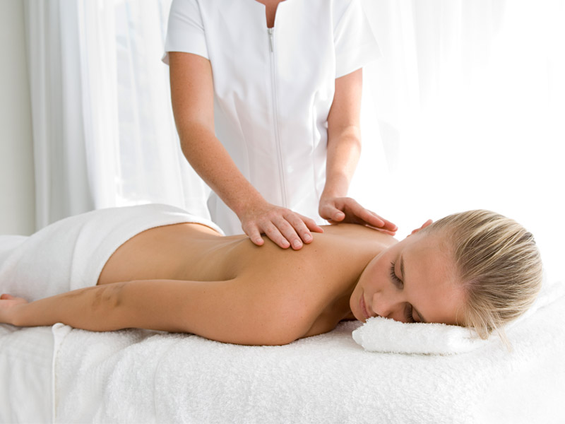
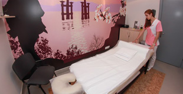

Тіло відпочиває у наших
масажних кабінетах!

ПРО НАС
25 затишних масажних кабінетів: професійний масажний стіл, комфортна температура (20-23°С), м'яке світло та ароматерапія. Дипломовані масажисти. Професійна косметика для масажу.У наших кабінетах ви зможете отримати масаж: класичний, лікувальний, косметичний, релаксуючий, антицелюлітний, медовий.